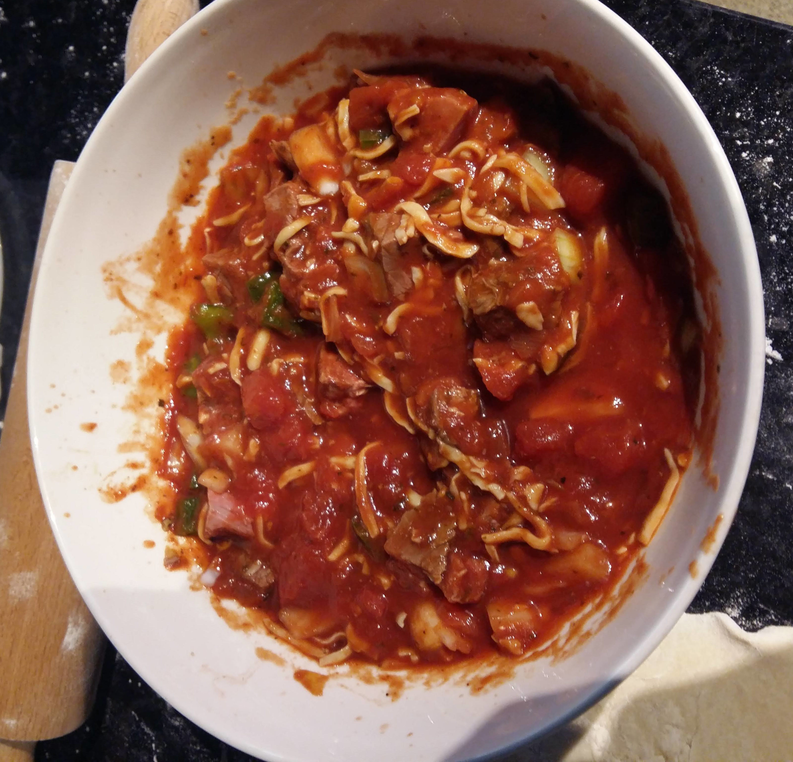
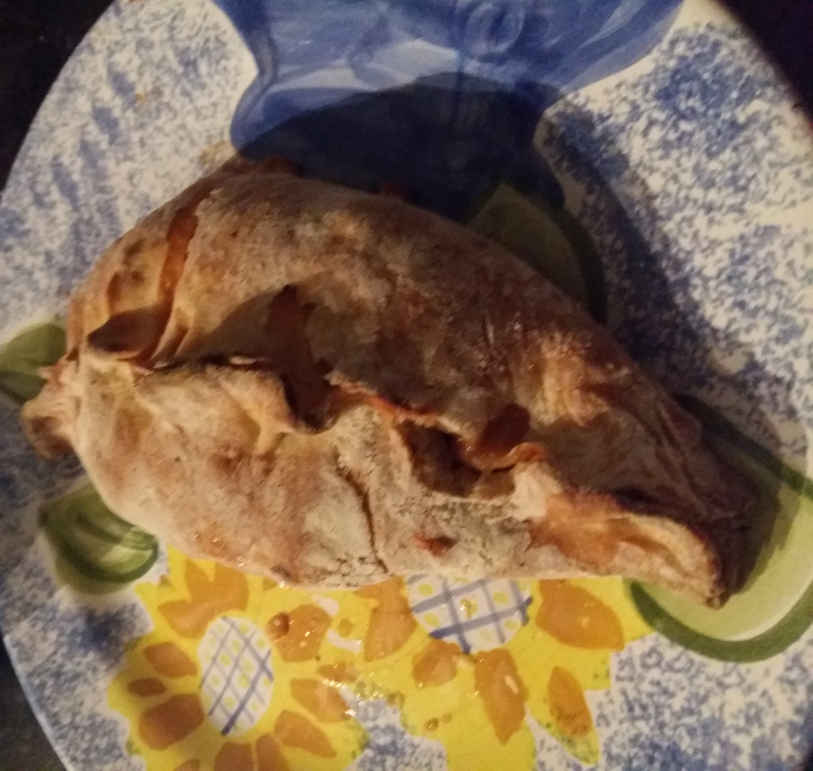

Here is my recipe for making mediocre Calzone
Ingredients
Dough
- 1 Cup Flour
- 1/4 tsp salt
- 1 tsp Yeast
- 1/2 tsp Sugar
- 1/3 Cup Warm Water
Filling
- 60g Tasty cheese
- 1/2 of a capsicum, diced
- 1/2 onion, diced
- 4T tomato paste
Method
Making the dough
- Put the sugar, water and yeast into a small bowl or measuring cup
- Put the flour and the salt into a large bowl
- Once the yeast mixture has risen and is frothy pour it into the bowl with the Flour
- Mix together until they are combined and then knead it on a floured surface. (It should look like the pizza dough)
- When you are happy with your dough then leave it to rise with a tea towel over the bowl
Making the filling
- Get yourself a large bowl
- Mix all of the Ingredients together (make sure to chop the ones that need chopping)
- Leave in the fridge until you are ready to actually make the calzones
It should look like this when you are done
Making the calzone
- Put your oven at 220 degrees celsius
- Seperate your dough into as many calzones that you want
- Grab one and roll it out on your floured surface
- roll it into a small circle
- Place a small amount of the filling in the middle of the circle
- Grab the edges and bring them together to make a crescent type shape (Make sure to make it so stuff won't leak out)
- Repeat until you have used all the dough and filling
- Bake for 15 on 220 and then lower to 200 for the last 10 mins
This is what it should look like after it is cooked
